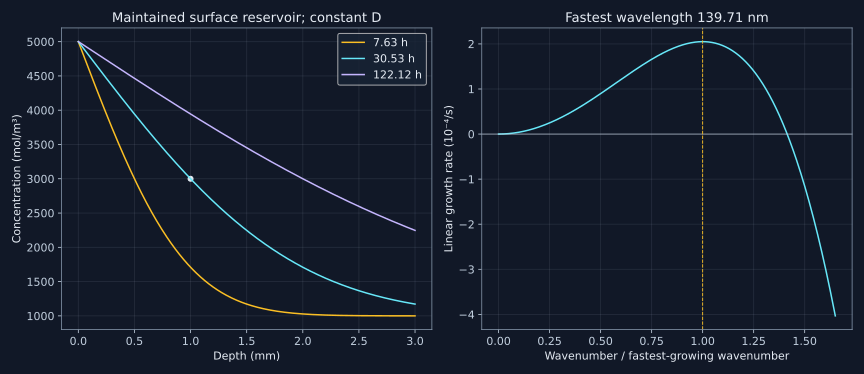

19. Diffusion, mobility and thermodynamic forces
Diffusion combines stochastic motion with a thermodynamic bias. Random jumps do not disappear when a chemical-potential gradient is present, and reverse jumps do not become forbidden merely because one direction is favored. The useful continuum description separates a positive kinetic response from the curvature of a phase's free energy, then conserves every transported component.
19.1 Random motion already has a thermodynamic interpretation
Lesson 46, 2:44–9:28. Topic span; mathematical constructions and numerical examples are explicitly original extensions.
Consider an isotropic uncorrelated walk in d dimensions with step length a and total successful jump rate $\Gamma$ per particle. During time t its mean number of jumps is $\Gamma t$. Independent zero-mean increments make cross terms vanish, so $\langle|\mathbf r(t)-\mathbf r(0)|^2\rangle=\Gamma a^2t$. Comparing with the diffusion definition $2dDt$ yields
$$D=\frac{\Gamma a^2}{2d}.$$For a simple cubic nearest-neighbor walk, there are six equally likely directions. If $\Gamma$ counts all directions, $D=\Gamma a^2/6$; if w is the rate into each specified direction, $\Gamma=6w$ and $D=wa^2$. Confusing those rate definitions introduces a factor six. In the original example a=2.5×10⁻¹⁰ m and total rate 10⁶/s give $D=1.041666666667\times10^{-14}$ m²/s.
The same result follows by counting crossings between adjacent slabs. Each slab of thickness a contains a concentration times a per unit transverse area. Its one-direction crossing rate is $\Gamma/6$, so the net flux is proportional to the concentration difference between slabs. Expanding that difference gives $J=-D\,\partial c/\partial x$. J can count atoms or moles provided c uses the matching amount convention; below it is molar flux in mol/(m² s), and c is concentration in mol/m³.
This derivation assumes independent, symmetric jumps and a simple geometry. Correlated vacancy-mediated motion changes the tracer correlation factor; anisotropic jump vectors produce a diffusion tensor. More generally the uncorrelated tensor is one half the jump rate times the second moment of the displacement vector. A lattice parameter is not automatically the jump length for every crystal or mechanism.
In an ideal solution, concentration relaxation also lowers the mixing free energy. Thus “random motion” and “thermodynamically driven diffusion” are not mutually exclusive mechanisms. A continuum drift is an ensemble bias in stochastic transitions, not evidence that an individual atom plans its route.
19.2 Activated rates, detailed balance and an apparent activation energy
Lesson 46, 9:28–27:20. Topic span; mathematical constructions and numerical examples are explicitly original extensions.
A transition-state description writes a rate schematically as an attempt factor multiplied by $\exp[-\Delta G^\ddagger/(RT)]$ when the barrier is molar. A per-particle barrier instead uses $k_BT$. Entropic and geometric factors depend on the rate convention. The recording's interpretation of this exponential as the exact fraction of all particles with energy above a threshold is not generally valid: integrating a Maxwell–Boltzmann energy distribution includes its density-of-states factor. Activated-rate theory concerns constrained state probabilities and barrier crossing, not simply an arbitrary energy-tail count.
If $\Delta G^\ddagger=\Delta H^\ddagger-T\Delta S^\ddagger$ with approximately constant activation terms and other prefactors over a range, the entropy factor can be absorbed into $D_0$, giving $D=D_0\exp[-Q/(RT)]$. In vacancy-mediated diffusion, the observed Q can contain vacancy formation as well as migration and other contributions. It is not universally just the energy to break one bond.
With natural logarithms, the slope of $\ln D$ versus $1/T$ is $-Q/R$. With base-ten logarithms it is $-Q/(R\ln10)$. Curvature can indicate temperature-dependent parameters, changing mechanisms, magnetic effects or an unsuitable fitted range. A fitted Arrhenius law needs a phase, species, composition domain and temperature range. Temperature in the exponential is kelvin; the program's synthetic law changes by a factor 104.034691 between 1000 K and 1000 °C.
For a concrete reversible pair, let two states have molar energies $E_1=0$ and $E_2=-5000$ J/mol, with one transition-state energy $E^\ddagger=50000$ J/mol and equal attempt factors. Their rate ratio is
$$\frac{k_{1\to2}}{k_{2\to1}} =\exp[-(E_2-E_1)/(RT)].$$At 1000 K it is 1.824601807. Both rates are positive. Equilibrium populations have the inverse compensating ratio in their crossing counts, so $p_1k_{1\to2}=p_2k_{2\to1}$. The net flux is zero although individual jumps continue. A favorable free-energy difference biases the rates; it does not make reverse motion impossible.
19.3 Fick's first law is local; conservation supplies the evolution law
Lesson 47, 1:47–8:15. Topic span; mathematical constructions and numerical examples are explicitly original extensions.
Fick's first law can apply locally to a curved, time-dependent concentration profile. It is not restricted to a straight, steady profile as a literal reading of the lecture's introductory comparison would suggest. For a small control volume with no reactions, inflow minus outflow gives
$$\frac{\partial c}{\partial t}=-\nabla\cdot\mathbf J.$$Combining with $\mathbf J=-D\nabla c$ yields
$$\frac{\partial c}{\partial t}=\nabla\cdot(D\nabla c).$$Only if D is spatially constant can it be pulled outside to obtain $D\nabla^2c$. In one dimension with D depending on c, the expression is $D(c)c_{xx}+D'(c)c_x^2$. Dropping the second term changes the equation and can break its conservation structure.
Steady state means $\partial_tc=0$, so the one-dimensional flux is constant in a source-free specimen. A linear profile follows for constant D, whereas a variable D can give a nonlinear steady profile. “Linear,” “steady” and “constant diffusivity” are related conditions in a particular example, not interchangeable definitions.
A transport problem also needs initial and boundary conditions. A closed specimen with no flux preserves its total component amount; a fixed surface concentration generally exchanges material with a reservoir. A diffusion law alone does not determine which experiment is being simulated, and thermodynamic permission does not supply a diffusion timescale.
19.4 Derive the half-space solution and invert it for time
Lesson 47, 8:15–12:33. Topic span; mathematical constructions and numerical examples are explicitly original extensions.
For a synthetic half-space $x\ge0$, take constant D, initial uniform concentration $c_0$, surface value $c_s$ maintained for all positive times, and $c\to c_0$ as $x\to\infty$. Seek a similarity solution $c=c_0+(c_s-c_0)F(\eta)$ with $\eta=x/(2\sqrt{Dt})$. Substitution into $c_t=Dc_{xx}$ gives
$$F''+2\eta F'=0,\qquad F'=-C\exp(-\eta^2).$$Use $F(0)=1$ and $F(\infty)=0$ to normalize the integral. The result is
$$c(x,t)=c_0+(c_s-c_0)\operatorname{erfc}\left(\frac{x}{2\sqrt{Dt}}\right).$$The initial and surface conditions conflict only at the single space–time corner; the solution approaches the initial value at every fixed positive depth as t tends to zero. For a target strictly between $c_0$ and $c_s$, let $\eta_*=\operatorname{erfc}^{-1}[(c_*-c_0)/(c_s-c_0)]$. Then
$$t_*=\frac{x_*^2}{4D\eta_*^2}.$$With concentrations 1000, 5000 and 3000 mol/m³ for $c_0,c_s,c_*$, depth 1 mm and D=10⁻¹¹ m²/s, the program gives $\eta_*=0.476936276$ and $t_*=109905.466916$ s. These are stipulated transport numbers, not a prediction of hardness in a steel. A hardness criterion would need additional phase, heat-treatment and property information.
The total excess solute per area is
$$Q_A(t)=\int_0^\infty[c(x,t)-c_0]\,dx =2(c_s-c_0)\sqrt{\frac{Dt}{\pi}}.$$It equals 4.731781680 mol/m² at the target time. Differentiating this uptake gives the surface flux $(c_s-c_0)\sqrt{D/(\pi t)}$, agreeing with the gradient at x=0. The ideal instantaneous boundary step has a diverging initial flux but finite integrated uptake at every finite time. A real finite surface-transfer coefficient would regularize that idealization.

19.5 State which diffusion coefficient and which reference frame
Lesson 48, 9:44–13:06. Topic span; mathematical constructions and numerical examples are explicitly original extensions.
| Quantity | What it tracks | Essential interpretation |
|---|---|---|
| Tracer coefficient D* | Statistically labeled particles in a specified host state | Can be measured with radioactive or stable-isotope techniques; no imposed macroscopic chemical gradient is required |
| Self diffusion | Motion of a species in its own chemical material | Labeling distinguishes otherwise equivalent atoms; isotope effects can require attention |
| Impurity diffusion | A species in a dilute host limit | Its value depends on the host phase and dilute-limit convention |
| Intrinsic coefficients | Species flux relative to a lattice frame | Lattice markers and frame conversion matter |
| Interdiffusion coefficient or matrix | Collective composition-profile evolution | Includes kinetic and thermodynamic factors; its entries depend on independent-component and reference-frame choices |
The lecture introduces these distinctions through tracer experiments and Kirkendall markers. All isotopic tracers need not be radioactive. A measured isotope can have a small mass-dependent mobility difference; treating its coefficient as the host tracer value is an approximation to assess, not a consequence of the isotope label alone.
A moving lattice carries material relative to a laboratory or volume-fixed frame. Fluxes transform with the appropriate concentration times frame velocity. Interchanging frame-dependent quantities without this correction can make a sound dataset appear inconsistent. A single multicomponent diffusion profile also need not identify every independent matrix entry; their identifiability depends on the paths and additional information measured.
19.6 Positive mobility and a thermodynamic factor play different roles
Lesson 47, 24:53–30:05. Topic span; mathematical constructions and numerical examples are explicitly original extensions.
In a specified simple tracer convention, define molar atomic mobility $M_i=D_i^*/(RT)$ with units m² mol/(J s). Per-particle mechanical mobility instead uses $k_BT$ in its Einstein relation. The factor R versus $k_B$ follows from the energy/amount convention; it is not an optional numerical choice.
For a binary incompressible isothermal phase, use x for B mole fraction, constant total molar concentration $c_T$, and exchange potential $\mu=\mu_B-\mu_A=g'(x)$. A reduced positive coefficient $L(x)$ gives
$$J_B=-c_TL(x)\nabla\mu,\qquad J_A=-J_B,\qquad \partial_t x=\nabla\cdot[L(x)\nabla\mu].$$The first two fluxes are here in the chosen constant-volume/amount frame. With homogeneous local g and no gradient terms, $\nabla\mu=g''(x)\nabla x$, so the corresponding scalar chemical diffusivity is $L g''$. Its sign depends on curvature as well as the positive kinetic coefficient.
The dimensionless binary thermodynamic factor is
$$\Phi=\frac{x(1-x)}{RT}g''(x) =\frac{\partial\ln a_B}{\partial\ln x} =1+\frac{\partial\ln\gamma_B}{\partial\ln x}.$$The equality follows from $\mu_B=g+(1-x)g'$ and therefore $d\mu_B/dx=(1-x)g''$. Under a Darken-type approximation with constant molar volume and neglected vacancy-wind/cross-correlation corrections,
$$\widetilde D=[(1-x)D_B^*+xD_A^*]\Phi.$$This approximate tracer-to-interdiffusion relation is not a universal identity for all multicomponent or correlated vacancy mechanisms. If the two tracer coefficients equal D*, it reduces to $D^*\Phi$, with $L=x(1-x)D^*/(RT)$. The ideal-solution limit has Phi=1. In a nonideal phase, removing the thermodynamic factor from a chemical diffusion measurement requires a thermodynamic description and its uncertainties.
The mobility-assessment discussion in Campbell, Kattner and Liu (2014), diffusion section, pp.8–10 motivates this separation. The actual selected PDF sections were inspected; cited mobility assessments were not rerun. Expressing kinetic parameters with composition and temperature functions analogous to a Gibbs-energy expansion is a modeling convenience, not a statement that mobility itself is a free energy or that all fitted mobility parameters are statistically independent.
One dimensionally explicit positive representation is $M_i=(D_{\rm ref}/RT)\exp[\Psi_i/(RT)]$, with $\Psi_i=RT\ln(D_{0,i}/D_{\rm ref})-Q_i$ for a simple Arrhenius tracer law. Here $D_{\rm ref}$ is a fixed diffusivity unit/reference, so the logarithm is dimensionless. Composition-dependent interaction functions and magnetic corrections can be added under the chosen convention. The thermodynamic and kinetic databases must describe compatible phases and composition variables.
19.7 Uphill concentration transport can lower free energy
Lesson 47, 12:33–24:53. Topic span; mathematical constructions and numerical examples are explicitly original extensions.
For the original regular solution
$$g(x)=RT[x\ln x+(1-x)\ln(1-x)]+\Omega x(1-x),\qquad g''(x)=\frac{RT}{x(1-x)}-2\Omega.$$At T=600 K and $\Omega=12000$ J/mol, curvature at x=0.2 is positive, 7179.234818 J/mol. At x=0.5 it is negative, −4045.289716 J/mol. With a constant positive tracer value 10⁻¹⁸ m²/s, the simplified chemical coefficient is respectively $2.302569277266\times10^{-19}$ and $-2.027235504273\times10^{-19}$ m²/s. The mobility remains positive in both cases.
The negative chemical coefficient means a homogeneous state is locally unstable: concentration variations can grow while the chemical potential drives free-energy reduction. It does not mean atoms acquire a negative tracer mean-square displacement. The region of negative homogeneous curvature is the spinodal. A globally metastable composition outside that region can instead require a finite nucleus to transform; global coexistence and local curvature are different tests.
Simply evolving a negative-D second-order equation gives unbounded growth at arbitrarily short wavelengths, an ill-posed continuum model. Add a positive gradient penalty to an incompressible free-energy functional:
$$G=c_T\int_V\left[g(x)+\frac{\kappa}{2}|\nabla x|^2\right]dV,\qquad \mu=g'(x)-\kappa\nabla^2x.$$Here kappa has units J m²/mol and is constant in this construction. Our factor one half fixes its numerical convention. The original Cahn–Hilliard (1958) interfacial-energy paper, pp.258–260 uses a gradient contribution with a different coefficient normalization. The actual selected paper text was read; its full interfacial examples and experimental comparisons were not reproduced. A measured or computed gradient coefficient is additional input, not determined by bulk g alone.
Use the conserved dynamics $\partial_t x=\nabla\cdot(L\nabla\mu)$. For closed boundaries with zero normal chemical-potential flux and the compatible gradient boundary condition, integration by parts yields
$$\frac{dG}{dt} =c_T\int_V\mu\,\partial_tx\,dV =-c_T\int_V L|\nabla\mu|^2\,dV\le0.$$To see the variational step, perturb x by a smooth test field h while preserving the stipulated total amount. Differentiating the functional gives $c_T\int[g'h+\kappa\nabla x\cdot\nabla h]\,dV$. An integration by parts converts the second term to $-c_T\int\kappa\nabla^2x\,h\,dV$ plus $c_T\int_{\partial V}\kappa h\,\mathbf n\cdot\nabla x\,dS$. A zero normal composition gradient removes this surface term. The remaining coefficient of h is the exchange chemical potential; a spatially constant Lagrange multiplier for the conserved mean does not change its gradient or the flux.
Mass conservation follows independently by integrating the evolution equation: the time derivative of $\int_Vx\,dV$ equals $\int_{\partial V}L\nabla\mu\cdot\mathbf n\,dS$, which vanishes for the closed boundary. Two boundary conditions are needed for this fourth-order problem: the natural composition-gradient condition and zero normal chemical-potential flux. A single no-flux statement must not silently replace both. Periodic boundaries are another consistent choice, cancelling opposite surface terms.
This proves dissipation for nonnegative L under the stated conditions. It does not claim that every individual component flux in a coupled multicomponent system must point down its own isolated chemical-potential gradient.
19.8 A linear spinodal calculation with a measurable length scale
Linearize about a uniform x₀ with constant $L_0$. A small Fourier perturbation of wavenumber k has growth rate
$$\sigma(k)=-L_0k^2[g''(x_0)+\kappa k^2].$$If curvature is negative, modes with $0<k^2<-g''/\kappa$ grow and sufficiently short wavelengths decay. Differentiating with respect to $k^2$ gives
$$k_*^2=-\frac{g''}{2\kappa},\qquad \sigma_*=\frac{L_0[g'']^2}{4\kappa},\qquad \lambda_*=\frac{2\pi}{k_*}.$$At x₀=0.5 with the stipulated parameters, kappa=10⁻¹² J m²/mol and $L_0=0.25D^*/(RT)$, the fastest wavelength is 139.707606 nm and the growth rate is $2.050188734555\times10^{-4}$ s⁻¹. A sinusoidal amplitude of 0.001 grows to 0.002091890 after one hour in the linearized model, preserving mean x=0.5.
For one sinusoidal period the quadratic excess free energy per mole is $[g''+\kappa k^2]a^2/4$, where a now denotes perturbation amplitude rather than the jump length used earlier. It decreases from −0.000505661 to −0.002212775 J/mol for that mode. The mode grows because its energy is more negative, not because mobility changed sign. This exact linearized calculation ceases to describe late nonlinear coarsening once amplitudes are no longer small.
The dispersion relation follows directly by substituting $\delta x=a(t)\cos(kz)$: its Laplacian is $-k^2\delta x$, so the potential perturbation is $(g''+\kappa k^2)\delta x$ and the second Laplacian contributes another $-k^2$. The zero-wavenumber mode has zero growth because the mean composition is conserved. This is why a local unstable curvature can amplify patterns without changing the specimen's average solute content.
The g here is the homogeneous phase branch, not its globally convexified two-phase envelope. Substituting a flat equilibrium envelope into the local curvature formula would discard the unstable homogeneous states that the calculation is intended to describe. Selecting a kinetic model requires a decision about which internal and phase degrees of freedom are resolved.
19.9 Multicomponent dissipation constrains a matrix, not each entry
For independent exchange-potential gradients in an appropriate conjugate basis, write $\mathbf J=-\mathcal L\nabla\boldsymbol\mu$. Under the usual isothermal reciprocal-response assumptions without additional time-reversal complications, the kinetic matrix is symmetric positive semidefinite. Its quadratic form makes total dissipation nonnegative. The composition-evolution matrix also contains a thermodynamic Hessian H, giving a product of the form $\mathcal L H$, which need not be symmetric.
In a nondimensional two-force teaching example, take
$$\mathcal L=\begin{pmatrix}2&1\\1&2\end{pmatrix},\qquad \nabla\boldsymbol\mu=\begin{pmatrix}1\\-3\end{pmatrix},\qquad \mathbf J=\begin{pmatrix}1\\5\end{pmatrix}.$$The first component moves along its own positive gradient, but $-\mathbf J\cdot\nabla\boldsymbol\mu=14>0$. Cross coupling supplies the compensation. With positive-definite $H=\begin{pmatrix}1&-2\\-2&5\end{pmatrix}$, the product is $\begin{pmatrix}0&1\\-3&8\end{pmatrix}$ and has positive eigenvalues $4\pm\sqrt{13}$. A negative cross entry in a chemical diffusion matrix is therefore not by itself a violation of dissipation or a spinodal instability.
The positive-definite Hessian in this example has first principal minor one and determinant one; the kinetic matrix has first principal minor two and determinant three. Thus neither factor is relying on a negative direction hidden by the multiplication. Their product has determinant three and trace eight, giving the stated real positive eigenvalues. An arbitrary nonsymmetric matrix with a positive diagonal would not have the same guarantee.
When both kinetic and thermodynamic matrices are positive definite, their product is similar to a symmetric positive-definite matrix using a square-root transformation. This explains the positive relaxation eigenvalues despite nonsymmetry. In a constrained multicomponent composition space, independent variables and reference frames must be specified before using such a statement.
19.10 Conservation at a moving phase interface is another condition
Lesson 48, 20:23–27:15. Topic span; mathematical constructions and numerical examples are explicitly original extensions.
The final lecture introduces diffusion-controlled boundary motion. Let a sharp interface move in the positive laboratory x direction with speed v, with limiting molar concentrations $c_L,c_R$ and fluxes $J_L,J_R$ in that same coordinate. Integrating conservation over a shrinking control region crossing the moving discontinuity gives
$$v(c_R-c_L)=J_R-J_L.$$The sign can be checked without memorizing a jump formula. In a coordinate translating with the interface, the relative component flux on a side is $J-vc$. A vanishingly thin interface without stored component amount or an interfacial reaction requires this relative flux to be continuous: $J_R-vc_R=J_L-vc_L$. Rearrangement gives the displayed relation. If the interface stores solute, a surface accumulation term is required and the simple equality changes.
This Rankine–Hugoniot balance follows from component conservation. It is not itself the condition of local thermodynamic equilibrium. Interface chemical potentials or other kinetic conditions supply additional information. Mole fractions can replace concentrations in this equation only with the matching molar-density factors and flux convention.
For stipulated $c_L=1000$, $c_R=4000$ mol/m³ and fluxes −10⁻⁷ and 2×10⁻⁷ mol/(m² s), the speed is $10^{-10}$ m/s. Reversing the interface normal reverses the sign convention consistently. In a multicomponent problem every conserved component must give the same interface speed; selecting one tie line independently of all flux balances can be inconsistent.
Local equilibrium at a moving boundary is an approximation that requires interfacial redistribution to be fast enough relative to migration. The mere contact of phases does not establish it. Curvature, coherency, solute trapping, interface mobility and heat flow can require additional terms. The next chapter turns these distinctions into numerical initial-boundary-value checks.
19.11 Execute the transport checks
Download the complete standard-library program and run python code/ch19_diffusion_mobility.py from the project directory. It verifies rate conventions, a synthetic Arrhenius inversion, detailed balance, half-space uptake, mobility/curvature separation, a linear spinodal mode, coupled matrix dissipation and the interface jump. Its fourteen actual output lines follow.
"""Synthetic diffusion, mobility and linear-stability checks; standard library."""
from math import exp,log,sqrt,pi,erfc,isclose
R=8.31446261815324
a,gamma,d=2.5e-10,1e6,3
diff=a*a*gamma/(2*d)
assert isclose(diff,a*a*(gamma/6),rel_tol=1e-14)
print(f'Uncorrelated 3D walk: total jump rate={gamma:.0f}/s, D={diff:.12e} m2/s')
d0,qact=1e-5,180000.
def arrhenius(temp):return d0*exp(-qact/(R*temp))
t1,t2=1000.,1200.;d1,d2=arrhenius(t1),arrhenius(t2)
qfit=-R*(log(d2)-log(d1))/(1/t2-1/t1)
assert isclose(qfit,qact,rel_tol=1e-12)
print(f'Arrhenius synthetic data: D1000={d1:.12e}, D1200={d2:.12e}; recovered Q={qfit:.6f} J/mol')
print(f'1000 Celsius versus 1000 kelvin: diffusivity ratio={arrhenius(1273.15)/arrhenius(1000):.6f}')
temp=1000.;nu=1e13;e1,e2,barrier=0.,-5000.,50000.
k12=nu*exp(-(barrier-e1)/(R*temp));k21=nu*exp(-(barrier-e2)/(R*temp))
p2=exp(-(e2-e1)/(R*temp));p1=1.;normal=p1+p2;p1/=normal;p2/=normal
assert isclose(p1*k12,p2*k21,rel_tol=1e-12)
print(f'Detailed balance: forward/reverse rate ratio={k12/k21:.9f}; reverse rate positive, equilibrium net flux zero')
# Half-space with fixed surface concentration; concentration units mol/m3.
c0,cs,ctarget,depth,dc=1000.,5000.,3000.,1e-3,1e-11
target=(ctarget-c0)/(cs-c0);lo,hi=0.,8.
for _ in range(100):
eta=(lo+hi)/2
if erfc(eta)>target:lo=eta
else:hi=eta
eta=(lo+hi)/2;time=depth**2/(4*dc*eta**2)
def concentration(x,t):return c0+(cs-c0)*erfc(x/(2*sqrt(dc*t)))
assert isclose(concentration(depth,time),ctarget,abs_tol=1e-9)
uptake=2*(cs-c0)*sqrt(dc*time/pi)
print(f'Half-space target: eta={eta:.9f}, time={time:.6f} s, concentration at1mm={concentration(depth,time):.6f} mol/m3')
print(f'Half-space excess solute per area={uptake:.9f} mol/m2; fixed surface boundary is a continuing reservoir')
# Constant tracer diffusivity, regular homogeneous phase, equal-species Darken approximation.
temp,omega,dtracer=600.,12000.,1e-18
def curvature(x):return R*temp/(x*(1-x))-2*omega
for x in (.2,.5):
phi=x*(1-x)*curvature(x)/(R*temp)
chemical=dtracer*phi
assert dtracer/(R*temp)>0
print(f'Regular-solution x={x:.1f}: curvature={curvature(x):.6f} J/mol, thermodynamic factor={phi:.9f}, Dchemical={chemical:.12e} m2/s')
# Gradient-regularized, linearized conserved dynamics around x=0.5.
h=curvature(.5);kap=1e-12;mob=.25*dtracer/(R*temp)
kstar=sqrt(-h/(2*kap));wavelength=2*pi/kstar;sigma=mob*h*h/(4*kap)
amplitude=1e-3;later=amplitude*exp(sigma*3600.)
e0=(h+kap*kstar*kstar)*amplitude**2/4
e1=(h+kap*kstar*kstar)*later**2/4
assert e1<e0 and later<.01
print(f'Linear spinodal toy: fastest wavelength={wavelength*1e9:.6f} nm, growth rate={sigma:.12e}/s')
print(f'One-hour linear amplitude={later:.9f}; quadratic excess energy {e0:.9f} -> {e1:.9f} J/mol, mean x remains0.5')
# Independent exchange-potential basis, dimensionless illustrative Onsager matrix.
kinetic=((2.,1.),(1.,2.));force=(1.,-3.)
flux=tuple(-sum(kinetic[i][j]*force[j] for j in range(2)) for i in range(2))
diss=-sum(flux[i]*force[i] for i in range(2))
assert flux==(1.,5.) and diss==14.
hessian=((1.,-2.),(-2.,5.))
matrix=tuple(tuple(sum(kinetic[i][k]*hessian[k][j] for k in range(2)) for j in range(2)) for i in range(2))
assert matrix==((0.,1.),(-3.,8.))
print(f'Coupled flux toy: J={flux}, total dissipation={diss:.6f}; component1 can move along its own potential gradient')
print(f'D=L*H={matrix}; nonsymmetric with a negative cross entry, eigenvalues={4-sqrt(13):.9f},{4+sqrt(13):.9f}')
# Both fluxes use same laboratory x direction and physical molar concentration.
cleft,cright=1000.,4000.;jleft,jright=-1e-7,2e-7
speed=(jright-jleft)/(cright-cleft)
assert isclose(speed*(cright-cleft),jright-jleft,abs_tol=1e-22)
print(f'Conservative moving interface: speed={speed:.12e} m/s; flux jump matched to concentration jump')
print('All checks PASS; linearized spinodal mode is not a full nonlinear phase-field simulation')
Uncorrelated 3D walk: total jump rate=1000000/s, D=1.041666666667e-14 m2/s Arrhenius synthetic data: D1000=3.962309341158e-15, D1200=1.462032348885e-13; recovered Q=180000.000000 J/mol 1000 Celsius versus 1000 kelvin: diffusivity ratio=104.034691 Detailed balance: forward/reverse rate ratio=1.824601807; reverse rate positive, equilibrium net flux zero Half-space target: eta=0.476936276, time=109905.466916 s, concentration at1mm=3000.000000 mol/m3 Half-space excess solute per area=4.731781680 mol/m2; fixed surface boundary is a continuing reservoir Regular-solution x=0.2: curvature=7179.234818 J/mol, thermodynamic factor=0.230256928, Dchemical=2.302569277266e-19 m2/s Regular-solution x=0.5: curvature=-4045.289716 J/mol, thermodynamic factor=-0.202723550, Dchemical=-2.027235504273e-19 m2/s Linear spinodal toy: fastest wavelength=139.707606 nm, growth rate=2.050188734555e-04/s One-hour linear amplitude=0.002091890; quadratic excess energy -0.000505661 -> -0.002212775 J/mol, mean x remains0.5 Coupled flux toy: J=(1.0, 5.0), total dissipation=14.000000; component1 can move along its own potential gradient D=L*H=((0.0, 1.0), (-3.0, 8.0)); nonsymmetric with a negative cross entry, eigenvalues=0.394448725,7.605551275 Conservative moving interface: speed=1.000000000000e-10 m/s; flux jump matched to concentration jump All checks PASS; linearized spinodal mode is not a full nonlinear phase-field simulation
19.12 Problems with complete solutions
1. Where does the factor six belong?
Derive D from a total successful rate and from a one-direction rate in a cubic random walk.
Solution
Each uncorrelated step contributes squared displacement a², so the mean-square displacement after time t is total rate times t times a². In three dimensions it equals 6Dt, giving $D=\Gamma a^2/6$. For six equally probable directions with rate w into each, total rate is 6w and therefore $D=wa^2$. Using the one-direction w inside the total-rate formula would underestimate D by six. The result changes with anisotropic geometry and correlated successive steps; the stated derivation does not cover those automatically.
2. A favorable jump can still reverse
Use the two-state example to calculate the rate and population ratios and verify equilibrium net flux.
Solution
The forward barrier is 50000 J/mol and the reverse barrier 55000 J/mol. With equal attempts, $k_{12}/k_{21}=\exp(5000/RT)=1.824601807$ at 1000 K. Boltzmann populations have $p_2/p_1=\exp(5000/RT)$, so $p_1k_{12}=p_2k_{21}$ after normalization. Both rates remain positive. An energy bias changes the relative probabilities; equilibrium cancels ensemble crossing counts rather than stopping atomic motion.
3. A nonlinear profile does not invalidate Fick's first law
Explain how it produces the evolution law, including a concentration-dependent coefficient.
Solution
The local law is $J=-D(c)c_x$, and conservation is $c_t=-J_x$. Combining gives $c_t=[D(c)c_x]_x=D(c)c_{xx}+D'(c)c_x^2$. No linear or steady profile was assumed. At steady state the flux is constant; a linear profile follows only when D is constant and no source is present. Dropping the D-prime term for a variable coefficient changes the conservation law. A numerical method should therefore discretize face fluxes consistently rather than silently apply a constant-D stencil to a variable-D problem.
4. Invert the half-space profile
Compute the time for the stipulated target and check its uptake interpretation.
Solution
The normalized target is $(3000-1000)/(5000-1000)=0.5$. Its complementary-error-function inverse is 0.476936276, so $t=(10^{-3})^2/[4(10^{-11})(0.476936276)^2]=109905.466916$ s. The excess uptake is $2(4000)\sqrt{Dt/\pi}=4.731781680$ mol/m². It increases with square root of time because the surface is a continuing reservoir. A sealed finite initial dose or a finite-thickness specimen requires different boundary conditions and does not share this solution.
5. Positive tracer diffusion, negative chemical diffusion
Explain the sign difference at the center of the regular solution without violating mean-square displacement.
Solution
At x=0.5, $g''=4RT-2\Omega=-4045.289716$ J/mol, so $\Phi=0.25g''/(RT)=-0.202723550$. With D*=10⁻¹⁸ m²/s the simplified chemical coefficient is -2.027235504273×10⁻¹⁹ m²/s. Tracer D* and mobility $D^*/RT$ remain positive. The negative sign comes from the unstable homogeneous thermodynamic curvature and indicates growing composition fluctuations. It is not a negative random-walk variance. A second-order negative-D evolution alone must be regularized before predicting a well-posed wavelength-dependent process.
6. Derive the fastest spinodal wavelength
Maximize the linear growth rate and explain why small scales are stabilized.
Solution
Write $u=k^2$ and $\sigma=-L_0(g''u+\kappa u^2)$. For negative g-double-prime and positive kappa this is a concave parabola in u. Its maximum is at $u=-g''/(2\kappa)$ and value $L_0(g'')^2/(4\kappa)$. The unstable interval ends at $u=-g''/\kappa$; beyond it the gradient penalty produces decay. The synthetic values give wavelength 139.707606 nm and rate 2.050188734555×10⁻⁴/s. This is an early linear instability result, not a prediction of the final precipitate size or nonlinear coarsening law.
7. A cross flux can climb its own potential
Verify dissipation and the diffusion-matrix eigenvalues in the two-component reduced example.
Solution
Multiplying the kinetic matrix by (1,−3) gives (−1,−5); reversing sign gives J=(1,5). Thus the first flux follows its own positive potential gradient, but $-J\cdot\nabla\mu=-[1-15]=14$. The Hessian product has trace eight and determinant three, so eigenvalues solve $\lambda^2-8\lambda+3=0$, giving $4\pm\sqrt{13}=0.394448725,7.605551275$. Both are positive although a cross entry is negative and the matrix is not symmetric. Total quadratic dissipation and the constrained thermodynamic Hessian, rather than each entry's sign, control the interpretation.
8. Derive the interface speed with units
Use the concentration and flux jumps, then state why this is not a complete moving-boundary solution.
Solution
The flux jump is $2\times10^{-7}-(-10^{-7})=3\times10^{-7}$ mol/(m² s); the concentration jump is 3000 mol/m³. Their ratio is $10^{-10}$ m/s. This gives the speed compatible with those supplied limiting values. A real solution still needs the bulk diffusion fields, initial/boundary conditions and an interface thermodynamic or kinetic condition. In multiple components, every jump balance must share this speed. Conservation cannot be substituted for chemical-potential equality or an interface-mobility law.
9. Can a mobility database stand alone?
Identify the inputs missing from a positive atomic-mobility description when predicting a transformation profile.
Solution
It lacks the phase Gibbs-energy functions and their constrained derivatives, the selected phases and references, initial concentration fields, specimen geometry, boundary reservoirs or fluxes and any interface conditions. Correlation and reference-frame conventions are also needed when connecting tracer, intrinsic and interdiffusion data. A positive mobility supplies a kinetic response to a specified force; it does not supply the force or determine which phases are stable. Matching thermodynamic and kinetic database versions therefore matters even if each database is internally consistent.